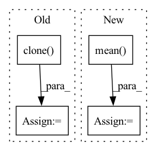

Pattern ID :2875
Before Change
output_not_checkpointed = out.data.clone()
grad_not_checkpointed = {}
for name, param in model.named_parameters():
grad_not_checkpointed[name] = param.grad.data.clone()
model.enable_gradient_checkpointing()
out = model(**inputs_dict).sample
// run the backwards pass on the model. For backwards pass, for simplicity purpose,After Change
// run the backwards pass on the model. For backwards pass, for simplicity purpose,
// we won"t calculate the loss and rather backprop on out.sum()
model_2.zero_grad()
loss_2 = (out_2 - labels).mean()
loss_2.backward()
// compare the output and parameters gradients
self.assertTrue((loss - loss_2).abs() < 1e-5)In pattern: SUPERPATTERN
Frequency: 3
Non-data size: 4
Instances Fragment ID: 11318140
Project Name: huggingface/diffusers
Commit Name: 22963ed82682465b5fdfd1bd474e1b0f2579b4db
Time: 2022-10-10
Author: patrick.v.platen@gmail.com
File Name: tests/test_models_unet.py
M Class Name: UNet2DConditionModelTests
N Class Name: UNet2DConditionModelTests
M Method Name: test_gradient_checkpointing(1)
N Method Name: test_gradient_checkpointing(1)
M Parent Class: unittest.TestCase,ModelTesterMixin
N Parent Class: unittest.TestCase,ModelTesterMixin
M File Name: tests/test_models_unet.py
N File Name: tests/test_models_unet.py
M Start Line: 273
M End Line: 333
N Start Line: 273
N End Line: 308
Before Change
// resample the data
if (n % self.resample.resample_every == 0) or (n == nepoch-1):
if self.resample.resample_from_last :
pos = pos.clone() .detach().to(self.device)
else:
pos = None
pos = self.sample(After Change
self.opt.step(lpos)
eloc = self.opt.eloc
cumulative_loss += torch.mean( eloc)
if cumulative_loss < min_loss:
min_loss = self.save_checkpoint(
n, cumulative_loss, self.save_model) Fragment ID: 11318136
Project Name: nlesc-jcer/qmctorch
Commit Name: 9f40f526749f6a91afacd7fa260c5e0c7e934715
Time: 2020-02-07
Author: nicolas.gm.renaud@gmail.com
File Name: deepqmc/solver/solver_orbital.py
M Class Name: SolverOrbital
N Class Name: SolverOrbital
M Method Name: run(5)
N Method Name: run(5)
M Parent Class: SolverBase
N Parent Class: SolverBase
M File Name: deepqmc/solver/solver_orbital.py
N File Name: deepqmc/solver/solver_orbital.py
M Start Line: 94
M End Line: 182
N Start Line: 94
N End Line: 179
Before Change
segment_ids = segment_ids.to(args.device)
with torch.no_grad():
if args.mlm :
outputs = model(inputs, masked_lm_labels=labels, position_ids=position_ids, token_type_ids=segment_ids)
else:
if args.model_type == "bart":
decoder_input_ids = labels[:, :-1].contiguous()
decoder_input_ids[decoder_input_ids == args.mlm_ignore_index] = tokenizer.pad_token_id
lm_labels = labels[:, 1:].clone()
outputs = model(inputs, labels=labels, lm_labels=lm_labels, decoder_input_ids=decoder_input_ids, position_ids=position_ids, token_type_ids=segment_ids)
else:
outputs = model(inputs, labels=labels, position_ids=position_ids, token_type_ids=segment_ids)
lm_loss = outputs[0]After Change
// Same behavior as modeling_bart.py, besides ignoring pad_token_id
ce_loss_fct = torch.nn.CrossEntropyLoss(ignore_index=args.mlm_ignore_index)
loss = ce_loss_fct(lm_logits.view(-1, lm_logits.shape[-1]), labels.view(-1))
eval_loss += loss.mean() .item()
nb_eval_steps += 1
Fragment ID: 11318139
Project Name: stanford-oval/genienlp
Commit Name: b84a6548a69fd9f62652eed1c74fd4b1fdb8b65b
Time: 2020-11-15
Author: mehrad@stanford.edu
File Name: genienlp/paraphrase/run_lm_finetuning.py
M Class Name: AnonimousClass
N Class Name: AnonimousClass
M Method Name: evaluate(5)
N Method Name: evaluate(5)
M Parent Class:
N Parent Class:
M File Name: genienlp/paraphrase/run_lm_finetuning.py
N File Name: genienlp/paraphrase/run_lm_finetuning.py
M Start Line: 318
M End Line: 344
N Start Line: 330
N End Line: 369